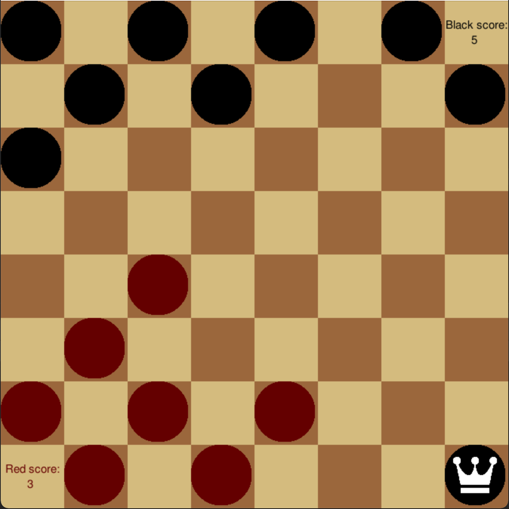
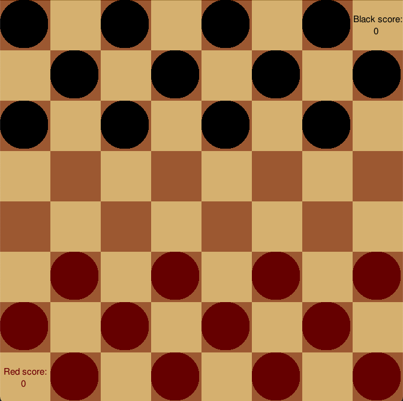
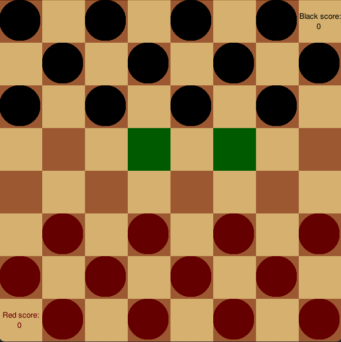
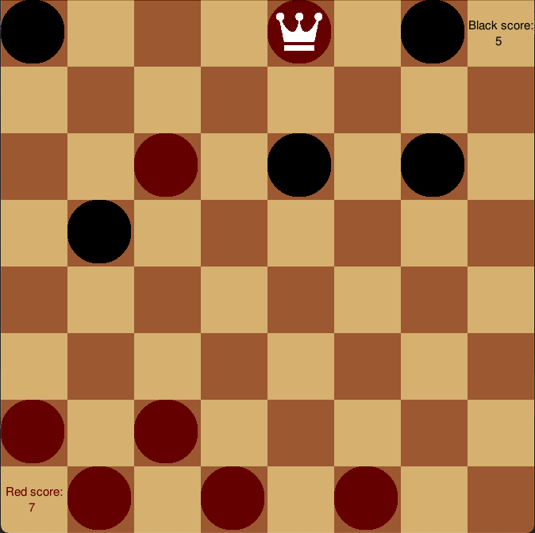
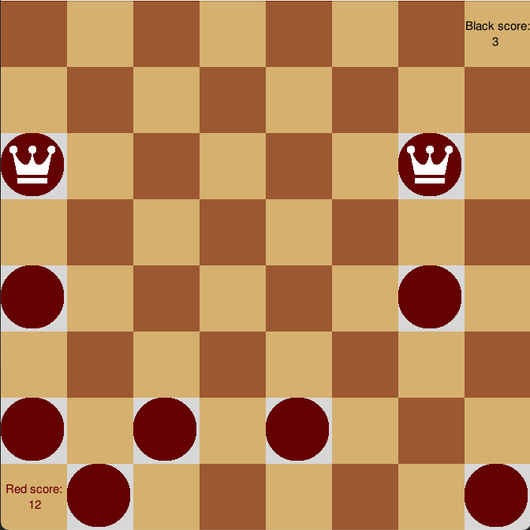

Checkers
Problem/Motivation
My friend (Charles Bugayer) and I wanted to gain experience into developing a game from zero to completion. Our goal was to be able to replicate all functionality and UI elements. We decided to pick "Checkers" because it was one of the very few games we both were familiar enough and because we both enjoyed playing it.
Goals
For the things we wanted to accomplish, we developed 10 requeriments:
- Beginner state of the checker board, the three first rows in each opposite side are filled with each player in the dark squares.
- The game has a scoreboard initialized to zero for both players, every time a checker is eaten, the other player gains one point.
- Each player can move only forward diagonally one space – with a couple of exceptions explained later.
- When the mouse hovers over a position, the possible moves are highlighted.
- When the mouse clicks, the checker is moved.
- If a player has a move where it can eat a checker of the other player, then it must make that move and the eaten checker disappears from the board. If multiple checkers can be eaten, then the player is allowed to choose which one to eat.
- A player can eat more than one time in one play given that the pieces are aligned.
- When a player hits the last row of the opposite side, its checker is promoted to king status. A king piece can move both backward and forward diagonally.
- The game ends when: Player A eliminates player B, so A wins; if a player cannot move, the player loses; no player has been removed after 25 moves: draw.
- When the game ends, the winning team is highlighted to show that the game is over.
Development
We decided to implement the game using C++ and the game engine ge211. Through an Object Oriented Programming (OPP) approach, we created classes such as: players,
board, model, etc.
Board: The board was implemented using square sprites of two colors and with a nested for-loop such as the sprites covered the canvas.
Player: The player tracked whether a piece was dark,light, or neither. A function to complement was: other_player (which switched the color assigened).
Piece: The piece class tracked whether a piece was a standard piece, a king piece, or neither. Some functions to complement were: set_king (which upgraded status from standard to king) and is_king(which checked wheter a piece had king status).
For more information on classes and development, please go to the github link.
Results
We ended up with a functional game that fullfilled all requirements. Something that would be interesting in terms of UI testing would be to check whether users prefer to drag the pieces or to click on the beggining and end-point of the move. It would also be great to incorporate sound to provide a more realistic experience. Here are some pictures:
Beggining state:
Places where the third black piece from the left can move to:
King piece:
End of game:
